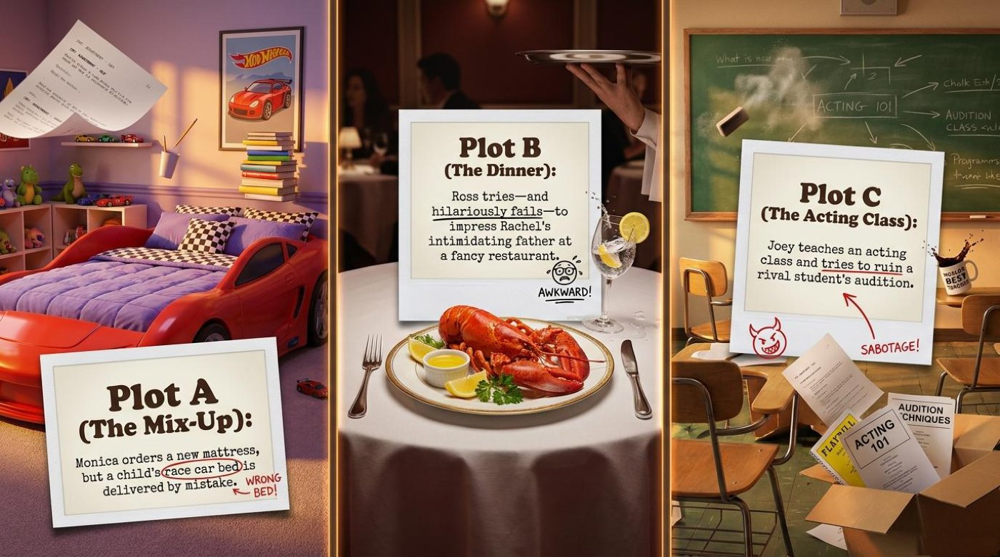
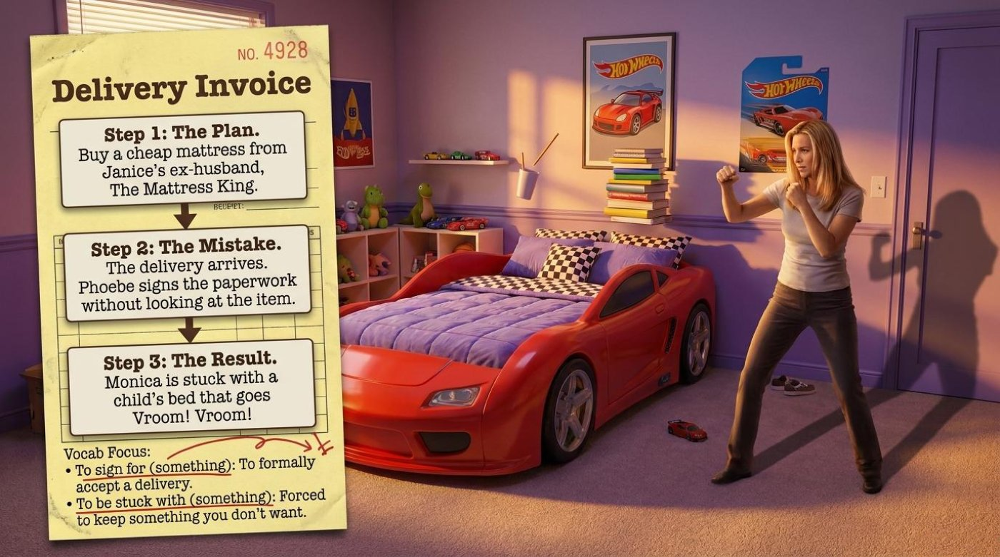
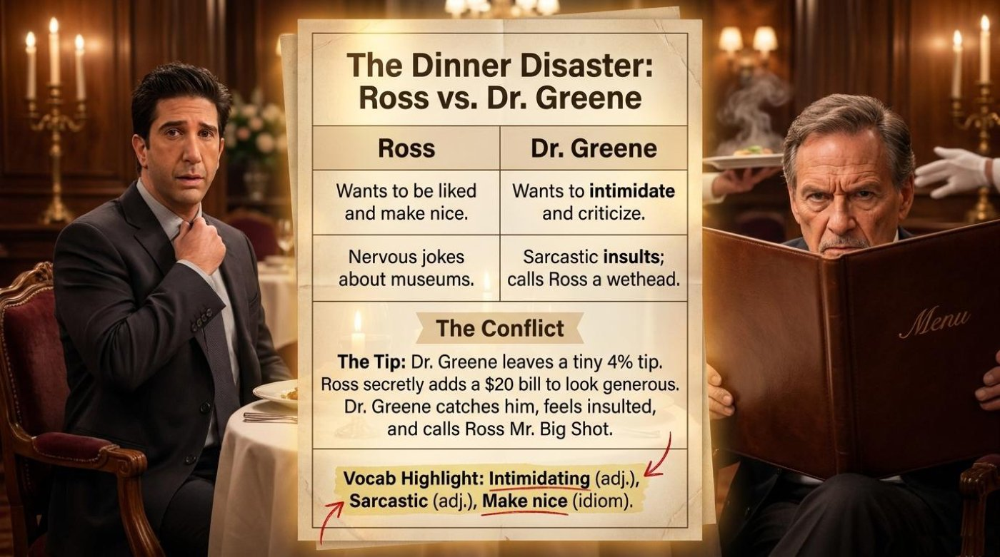
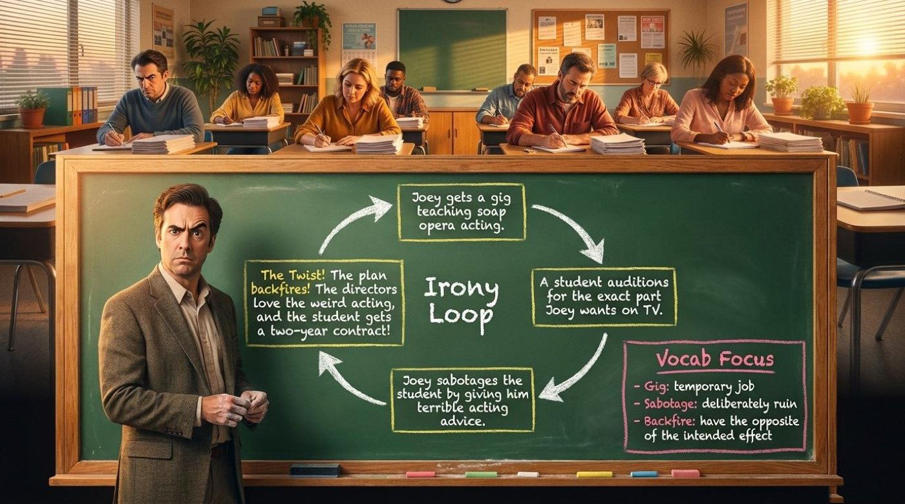
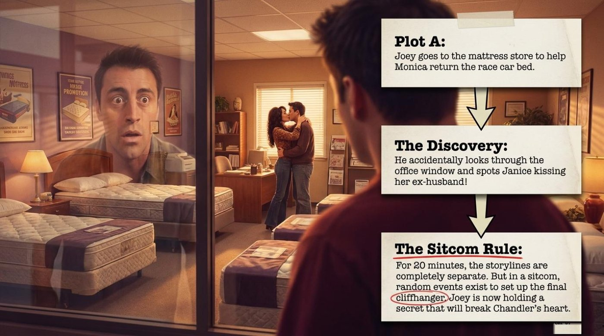
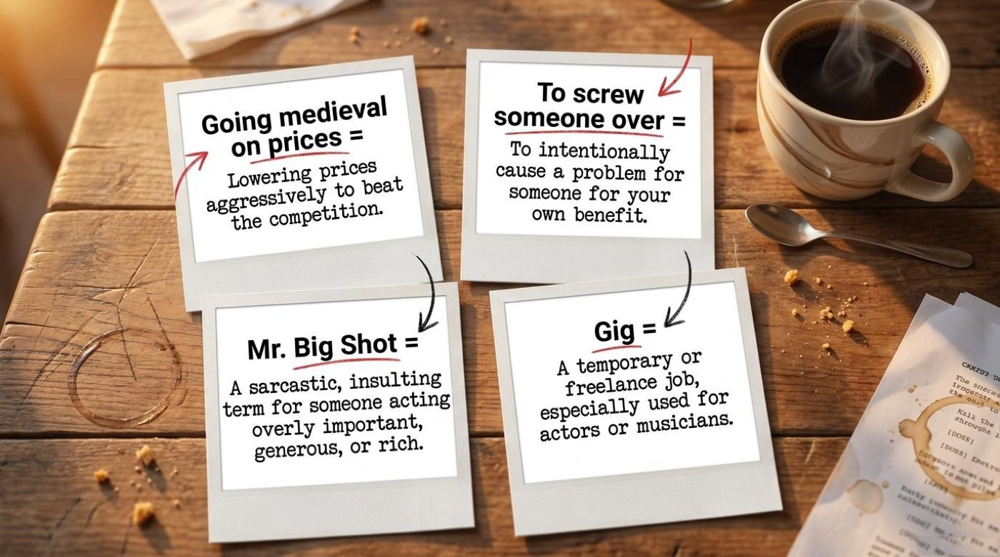
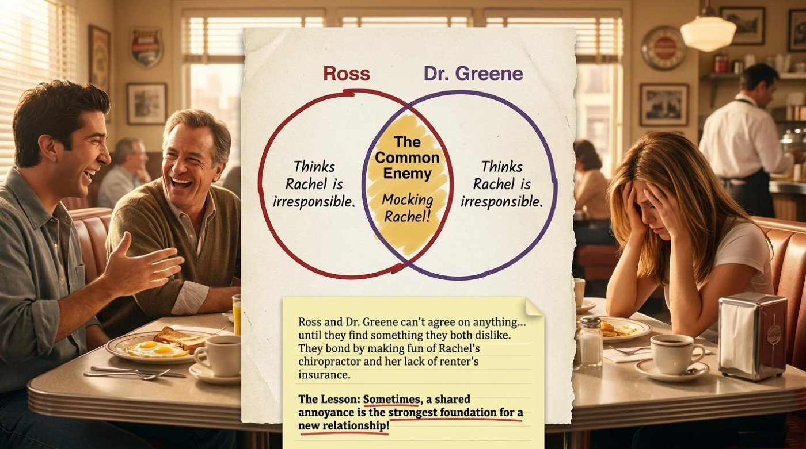
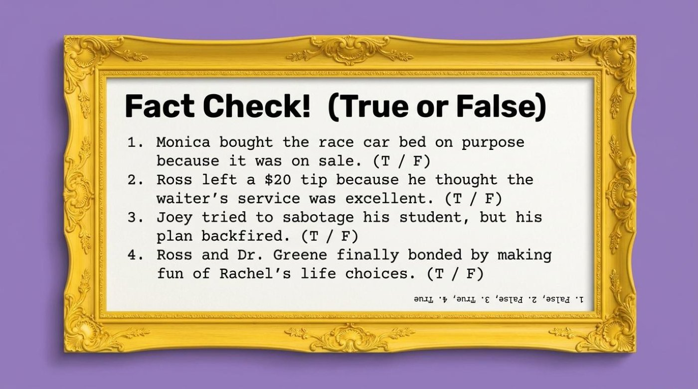

A warm-up arena for the idioms in this lesson — it opens in a new tab.
English Through TV · Field Guide No. 307
English Through TV: Friends — Master 90s Idioms and Real Conversational English with “The One with the Race Car Bed”
📺 Some of the best English teachers never intended to teach anything at all. On a November evening in 1996, NBC beamed a new episode of Friends into millions of American living rooms, and “The One with the Race Car Bed” quietly became a masterclass in the language people actually speak — sarcastic, impatient, wonderfully informal New York English compressed into twenty-two minutes. Nearly three decades later, the episode still works as a classroom, because idioms like going medieval on prices have lost none of their punch. The phrase sounds outrageous, and that is precisely why it sticks in memory.
This article walks through a ten-page visual lesson deck that deconstructs the episode into its three storylines, its juiciest idioms, and its most useful patterns. The material was assembled as an AI-assisted study companion — the Gemini Notebook watermark on the pages gives it away — and it treats the sitcom seriously as a language machine. Three storylines, one giant misunderstanding, and a set of 90s idioms that still sound fresh: pay attention, because by the end of this guide you will be able to retell the whole episode in confident, colorful English.

📺 Three Storylines, One Giant Misunderstanding
Part One · Content and Context
The deck announces its mission on the cover: “Three storylines. One giant misunderstanding. Let’s master conversational English and 90s idioms by deconstructing a classic sitcom episode!” That structure is a gift for language learners. Instead of one flat scene, the episode offers three separate stories, and each one showcases a different register of English: domestic comedy, tense social hierarchy, and workplace revenge. Watching with that map in mind turns passive viewing into active listening, because every scene you hear belongs to a plot you can name.

Plot A — The Mix-Up: Monica and the Race Car Bed
The deck states the premise with surgical clarity: “Monica orders a new mattress, but a child’s race car bed is delivered by mistake.” ⚠️ The next page draws the disaster as a delivery invoice, and it breaks the catastrophe into three clean steps worth reading slowly, because each step carries its own vocabulary.
“Step 1: The Plan. Buy a cheap mattress from Janice’s ex-husband, The Mattress King.” — the delivery invoice, step one
“Step 2: The Mistake. The delivery arrives. Phoebe signs the paperwork without looking at the item.” — the delivery invoice, step two
“Step 3: The Result. Monica is stuck with a child’s bed that goes Vroom! Vroom!” — the delivery invoice, step three
The comedy is structural: one careless signature turns a bargain into a toy. Notice how the lesson attaches vocabulary directly to the story, with a “Vocab Focus” box printed on the invoice itself: “To sign for (something): To formally accept a delivery” and “To be stuck with (something): Forced to keep something you don’t want.” The words are not presented as a list to memorize; they are the hinge of the plot itself. 📌 Practical advice: when you watch anything in English, hunt for the “hinge verbs” — the small phrases like sign for or be stuck with that make a story move. Write each one into your notes together with the mistake it caused, and the memory will anchor itself. A learner who has visualized Monica — a chef famous for controlling every detail — sleeping in a toddler’s bed will never forget what stuck with means.

Plot B — The Dinner Disaster: Ross vs. Dr. Greene
The second storyline moves from bedrooms to white tablecloths: “Ross tries—and hilariously fails—to impress Rachel’s intimidating father at a fancy restaurant.” The deck builds a two-column portrait of this battle, and translated into prose it reads like a character study. Ross “wants to be liked and make nice” and fires “nervous jokes about museums,” while Dr. Greene “wants to intimidate and criticize” and answers with “sarcastic insults.” The slide even records the father’s favorite weapon: he “calls Ross a wethead,” an old-fashioned American insult that paints someone as too young and silly to be taken seriously.
Then the conflict detonates over money, and the slide narrates it precisely: “The Tip: Dr. Greene leaves a tiny 4% tip. Ross secretly adds a $20 bill to look generous. Dr. Greene catches him, feels insulted, and calls Ross Mr. Big Shot.” The scene is a masterclass in social English: a nervous boyfriend performing generosity, a furious father reading the gesture as condescension, and one devastating nickname as the punchline. 💡 Practical advice: describing people is a daily skill in every language. Steal the deck’s own “Vocab Highlight” — “Intimidating (adj.), Sarcastic (adj.), Make nice (idiom)” — and apply it to people in your own life: an intimidating landlord, a sarcastic colleague, a relative you make nice with at family dinners. Words that describe real humans attach themselves to memory far faster than abstract lists ever will.

Plot C — The Irony Loop: Joey’s Perfect Plan
The third storyline is drawn on the deck’s chalkboard as a closed circle titled “Irony Loop,” and every arrow on that circle is a complete sentence. First: “Joey gets a gig teaching soap opera acting.” Then: “A student auditions for the exact part Joey wants on TV.” Then: “Joey sabotages the student by giving him terrible acting advice.” And finally the twist: “The Twist! The plan backfires! The directors love the weird acting, and the student gets a two-year contract!”
The chalkboard comes with its own “Vocab Focus” box, and it reads like a thriller compressed into three words: “Gig: temporary job. Sabotage: deliberately ruin. Backfire: have the opposite of the intended effect.” Together those three verbs retell the entire storyline in a single breath — Joey got a gig, sabotaged a rival, and watched everything backfire. 📌 Practical advice: retelling is the cheapest speaking practice that exists. Close this page and retell Plot C aloud in exactly four sentences using gig, sabotage, and backfire. If you can do it without stumbling, the words are yours; if you stumble, the stumble shows you precisely what to review.

The Discovery — and the Sitcom Rule
The deck’s final plot slide shows Joey at the mattress store, helping Monica return the race car bed, and catches the exact moment everything changes: “He accidentally looks through the office window and spots Janice kissing her ex-husband!” For twenty minutes the three storylines never touched each other; suddenly two of them collide. The slide names the mechanism with unusual honesty and calls it “The Sitcom Rule”: “For 20 minutes, the storylines are completely separate. But in a sitcom, random events exist to set up the final cliffhanger. Joey is now holding a secret that will break Chandler’s heart.”
💡 That single paragraph teaches more about how English-language comedy works than a semester of plot summaries. Sitcom writing is engineering: an innocent errand is never innocent, a chance glance through a window is a loaded gun, and an episode ends on a cliffhanger precisely when the audience can least bear it. Once a learner internalizes this rule, listening changes — you stop translating every word and start anticipating what the story will do next. Remember also that the deck treats this as a language lesson, not just a film-studies lecture: the final slide of the story section exists to hand you the vocabulary of suspense, the same vocabulary you will meet in every trailer, recap, and water-cooler conversation about television.

📚 The Vocabulary That Runs the Episode
Part Two · Vocabulary and Language Takeaways
The deck devotes a full page of polaroid-style cards to its idioms, and its definitions are worth quoting exactly. Each entry below follows the same routine: the phrase, the literal image behind it, the meaning in context, the example from the material, and the way the lesson itself explains it. Read the entries first, then flip the interactive cards at the end of this section until every term feels obvious. The vocabulary splits naturally into two families — words about power games between people, and words about plans colliding with reality — and that split mirrors the episode itself.

1. to sign for (something) phrasal verb
Literal meaning: to put your signature on the paper a courier holds out.
In context: to formally accept a delivery — from the second your pen lifts, the item is legally yours and legally your problem.
From the material: “Phoebe signs the paperwork without looking at the item.” Phoebe’s kindness becomes the exact mechanism of the disaster, because nobody glances at the box before signing.
How the lesson explains it: the invoice defines it as “To formally accept a delivery.” The deck chose a plot-critical verb on purpose, which is the smartest way to make vocabulary unforgettable.
2. to be stuck with (something) idiom
Literal meaning: unable to move away from something — the physical image of being trapped.
In context: forced to keep something you did not want, because returning it is impossible, expensive, or humiliating.
From the material: “Monica is stuck with a child’s bed that goes Vroom! Vroom!” The onomatopoeia — a bed that literally makes car noises — is the joke that keeps the phrase warm in memory.
How the lesson explains it: the invoice says “Forced to keep something you don’t want.” Notice that the definition works just as well for objects, apartments, jobs, and even relatives.
3. intimidating adjective
Literal meaning: built on the verb intimidate — to frighten someone into doing what you want.
In context: describing a person whose mere presence makes you nervous, quiet, and eager to leave the room.
From the material: “Ross tries—and hilariously fails—to impress Rachel’s intimidating father at a fancy restaurant.” The father never raises his voice; his contempt does all the shouting.
How the lesson explains it: the deck lists it in its “Vocab Highlight” as “Intimidating (adj.)”, filed next to sarcastic and make nice — the full emotional toolkit for uncomfortable dinners.
4. sarcastic adjective
Literal meaning: from the Greek sarkazein, “to tear flesh like a dog” — sarcasm has always been verbal violence.
In context: saying the opposite of what you mean, with a tone that lets everyone know you are mocking.
From the material: “Sarcastic insults; calls Ross a wethead.” A wethead, in old American slang, is someone so immature their hair is still wet — a devastating choice for a nervous adult suitor.
How the lesson explains it: “Sarcastic (adj.)” sits in the same Vocab Highlight box, because the dinner scene runs on sarcasm the way an engine runs on fuel.
5. make nice idiom
Literal meaning: to manufacture friendliness, the way you would manufacture a product.
In context: to act warm and polite — especially to smooth over tension or to win someone’s approval.
From the material: “Wants to be liked and make nice.” That is Ross’s entire dinner strategy: nervous museum jokes plus forced charm, with predictable results.
How the lesson explains it: the deck labels it “Make nice (idiom)” outright — a reminder that make + adjective often builds a fixed expression rather than a logical phrase.
6. gig noun
Literal meaning: originally 1920s jazz slang for a paid musical engagement.
In context: a temporary or freelance job, especially in the arts — now applied to everything from DJ sets to design contracts.
From the material: “Joey gets a gig teaching soap opera acting.” For an actor between roles, teaching is both income and irony — he is qualified on paper only.
How the lesson explains it: the polaroid reads “A temporary or freelance job, especially used for actors or musicians.” The word temporary is the heart of the definition.
7. to sabotage verb
Literal meaning: from French saboter — workers in wooden shoes (sabots) wrecking machinery, at least in legend.
In context: to deliberately ruin a plan, a system, or a person’s chances.
From the material: “Joey sabotages the student by giving him terrible acting advice.” The sabotage is dressed up as mentorship, which is what makes it both wicked and funny.
How the lesson explains it: the chalkboard is ruthless: “Sabotage: deliberately ruin.” Two words, and they carry the moral weight of the whole storyline.
8. to backfire verb
Literal meaning: when a gun or an engine explodes in the wrong direction — toward the person holding it.
In context: to produce the exact opposite of the intended effect.
From the material: “The Twist! The plan backfires! The directors love the weird acting, and the student gets a two-year contract!” Every exclamation mark on that chalkboard is Joey’s plan collapsing in slow motion.
How the lesson explains it: “Backfire: have the opposite of the intended effect.” Remember the literal image and the figurative meaning will never slip — the shot always comes back at you.
9. to go medieval on prices idiom
Literal meaning: medieval refers to the Middle Ages, an era famous for spectacular brutality.
In context: to attack something with total, unsubtle violence — here, slashing prices aggressively to crush the competition.
From the material: the phrase belongs to The Mattress King, Janice’s ex-husband, whose discount war sets the whole delivery plot in motion.
How the lesson explains it: the polaroid uses an equation: “Going medieval on prices = Lowering prices aggressively to beat the competition.” The pattern go medieval on something works for any all-out attack.
10. to screw someone over idiom · informal
Literal meaning: the verb screw suggests twisting; the image is someone being turned into a losing position.
In context: to treat someone unfairly — to intentionally cause a problem for another person for your own benefit.
From the material: Joey’s “helpful” mentoring session is a textbook case of the phrase in action: friendly words wrapped around a deliberate wrecking job.
How the lesson explains it: the polaroid states “To screw someone over = To intentionally cause a problem for someone for your own benefit.” ⚠️ Mind the register: the phrase is informal and a little vulgar at the edges, so it belongs with friends, not with job interviews.
11. Mr. Big Shot noun phrase · sarcastic
Literal meaning: a big shot genuinely is an important, powerful person.
In context: said with a sneer, the same words become an insult for someone acting overly important, generous, or rich.
From the material: “Dr. Greene catches him, feels insulted, and calls Ross Mr. Big Shot.” The capital letters are the tone of voice.
How the lesson explains it: the polaroid defines it as “A sarcastic, insulting term for someone acting overly important, generous, or rich.” The lesson teaches the insult and its safety instructions at the same time.
12. cliffhanger noun
Literal meaning: from the serial films of the 1930s that ended episodes with the hero literally hanging off a cliff.
In context: any ending engineered to leave the audience desperate for the next part.
From the material: “Random events exist to set up the final cliffhanger. Joey is now holding a secret that will break Chandler’s heart.” The secret is the cliff, and the audience is hanging.
How the lesson explains it: the deck uses the word inside “The Sitcom Rule,” treating it as essential television literacy for English learners.
🎯 Flip-Card Trainer: Twelve Terms, One Deck
The cards below carry the same twelve terms for spaced repetition. Tap a card or press Enter to flip it, read the four fields on the back, and use the button to turn the whole set over at once. Rotating through the cards daily beats rereading a list, because every flip forces your memory to produce the meaning before the card confirms it.
Look at the twelve cards together and a pattern emerges: half of them describe power plays — intimidating, sarcastic, make nice, go medieval on prices, screw someone over, Mr. Big Shot — and half describe plans colliding with reality — sign for, stuck with, gig, sabotage, backfire, cliffhanger. That is the episode’s worldview in miniature: every character tries to manage people or events, and reality answers with a punchline. Learning the two families as sets, rather than as twelve separate items, gives the vocabulary a shape that survives long after the laughter track fades.
💡 Deeper Meaning: Four Symbols Hiding in a Sitcom
Part Three · Metaphors and Symbols
A good sitcom episode is a machine of symbols wearing a comedy costume. The deck highlights four of them, and each one carries a lesson that goes deeper than vocabulary. Reading them as symbols rather than as jokes is what separates learners who memorize lines from learners who can actually talk about stories in English.
1. The Race Car Bed — Expectations vs. Reality
A grown woman orders an adult mattress and receives a toddler’s toy with headlights. The deck states the result without mercy: “Monica is stuck with a child’s bed that goes Vroom! Vroom!” The bed is the episode’s central symbol: the gap between what we order and what arrives, between the adult we believe we are and the chaos we actually live in. Monica controls food, cleanliness, and her friends’ lives — and cannot control a cardboard box. The lesson’s interpretation is quietly philosophical: it frames the whole storyline as “The Mix-Up,” a mistake nobody wanted and everybody must live with. For a language learner the bed does double duty, because it physically embodies the phrasal verbs attached to it — you can picture stuck with, and a picture is worth ten repetitions.
2. The Irony Loop — When Plans Circle Back
The chalkboard slide draws Joey’s storyline as a literal circle, and the shape is the message. Each step — the gig, the rival student, the sabotage — looks like progress, yet the arrows keep curving until the plan lands where it started, only worse. The twist line lands like a drumroll: “The Twist! The plan backfires! The directors love the weird acting, and the student gets a two-year contract!” The circle teaches dramatic irony in visual form: the audience watches Joey dig his own hole with a shovel labeled “helpful advice.” The deck’s interpretation — the words Irony Loop written in chalk in the center of the board — is the entire theory of the sitcom in two words. It is worth remembering the next time one of your own careful plans produces a two-year contract for somebody else.
3. The $20 Bill — Generosity as Performance
The most uncomfortable object in the episode is a piece of paper. Dr. Greene leaves a tiny 4% tip as an act of contempt; Ross slides a $20 bill under it as an act of theater. The slide narrates the collision: “Ross secretly adds a $20 bill to look generous. Dr. Greene catches him, feels insulted, and calls Ross Mr. Big Shot.” The symbol cuts both ways: the bill represents Ross’s hunger to be liked, and the father’s fury represents an older man’s hatred of being corrected — especially by someone he calls a wethead. Notice what the deck is teaching beneath the plot: generosity that is performed for an audience stops being generosity and becomes a claim of superiority. Language learners get a bonus lesson in tone here, because the same action can be described with warm words or with the deck’s cold, precise vocabulary — make nice, intimidating, sarcastic — and the words you choose reveal whose side you are on.
4. The Common Enemy — The Venn Diagram of Friendship
The strangest page in the deck is a hand-drawn Venn diagram: two circles, one labeled Ross and one labeled Dr. Greene, overlapping on a single yellow patch that reads “The Common Enemy: Mocking Rachel!” Both men, it turns out, think Rachel is irresponsible, and the slide explains the reconciliation in full: “Ross and Dr. Greene can’t agree on anything... until they find something they both dislike. They bond by making fun of Rachel’s chiropractor and her lack of renter’s insurance.” Beneath it, the lesson delivers its most quotable line: “The Lesson: Sometimes, a shared annoyance is the strongest foundation for a new relationship!” It sounds like a joke, and it is also social psychology: common dislikes create instant teams, in diners and in offices alike. The symbol matters for learners because the language of bonding — can’t agree on anything, they both dislike, making fun of — is exactly the casual speech that textbooks skip. The deck hands you the script for humanity’s oldest friendship algorithm: find someone who is annoyed by the same things you are.

🧠 Comprehension Check: Prove the Episode Stuck
Part Four · Test Yourself
The deck closes its story section with a gold-framed board titled “Fact Check! (True or False)” and four statements about the plots. The quiz below expands that board into eight questions — comprehension, vocabulary in context, true-or-false statements, and one fill-in-the-blank — with instant feedback after every click. A perfect run means the episode, the idioms, and the symbols are all officially yours.

✨ Your Turn: Language Lives in Action
The Takeaway
The deck’s final board is titled “Your Turn: Language in Action,” and the title is the whole philosophy. The board issues three challenges: it asks learners to recall a delivery they signed for and the completely wrong item they were stuck with, it invites them to explain why people sometimes bond over things they dislike the way Ross and Dr. Greene did, and it dares them to build a fresh sentence with screw someone over or backfire. Notice that none of the challenges involve memorizing — all three push the vocabulary straight into personal storytelling, which is where language actually lives.

The lesson’s most inspiring line deserves the final word, because it doubles as advice for every relationship and every study session: “Sometimes, a shared annoyance is the strongest foundation for a new relationship!” The main takeaway for learners follows directly from that quote and from the episode itself — English is not a list to memorize but a set of stories to retell. Rewatch “The One with the Race Car Bed” with the three plots in mind, retell each storyline aloud using sign for, stuck with, gig, sabotage, and backfire, describe the most intimidating person in your life with the deck’s adjectives, and answer the final board’s three prompts out loud. Three storylines, one giant misunderstanding, and a dozen idioms: the sitcom already did the teaching — the replaying is your turn.
📎 Lesson Files
The complete visual deck accompanies this article. Open it in a new tab and keep it beside you while you rewatch the episode: